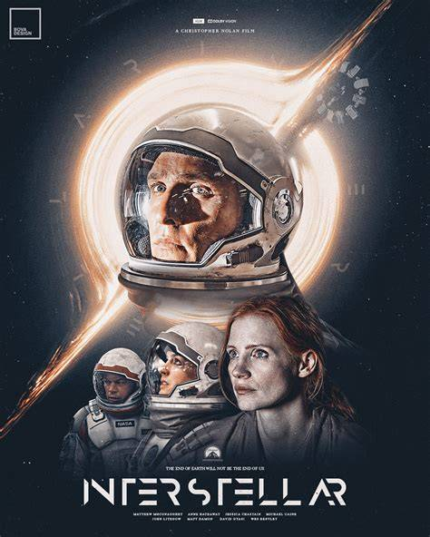

Interstellar follows Joseph Cooper, a former NASA pilot turned farmer, as he leads a daring mission through a wormhole to find a new habitable planet for humanity, exploring space, love, and time itself. In the mid-21st century, Earth is failing, facing crop blights and dust storms that threaten human survival SparkNotes . Joseph Cooper, a widower raising his children Murph and Tom, discovers mysterious patterns in Murph's room, which turn out to be coordinates leading to a secret NASA facility No Film School . There, Professor John Brand reveals a wormhole near Saturn giving access to 12 potentially habitable planets in another galaxy. Cooper is recruited to pilot the Endurance spacecraft to explore these planets and secure humanity’s survival synopsisandreviews.com . The crew first visits Miller’s planet, a water world near the black hole Gargantua, where extreme gravity causes severe time dilation—hours there equal years on Earth. A tidal wave kills crew member Doyle, and Cooper and Amelia Brand return to find decades have passed. They then go to Mann’s icy planet, where Dr. Mann has falsified data to ensure rescue, resulting in dangerous encounters that end with Mann’s death and severe damage to their ship synopsisandreviews.com +1 . Cooper sacrifices himself to guide Brand safely toward Edwards’ habitable planet, entering Gargantua’s black hole. Inside, he finds a tesseract, a multidimensional space built by future humans, allowing him to communicate with Murph across time. Using Morse code via gravitational anomalies, he provides her with critical data, enabling her to solve the gravitational equation needed for Plan A and the survival of humanity Flickside +1 . At the conclusion, Cooper is rescued by the space habitat Cooper Station, named after Murph. He reunites with his elderly daughter before setting out to find Amelia Brand, who has successfully reached the new habitable planet and is preparing a human colony SparkNotes +1 . Core themes of the film include human survival, love transcending time and space, the impact of sacrifice, and the interplay between science and emotion, with time dilation and relativity playing crucial narrative roles